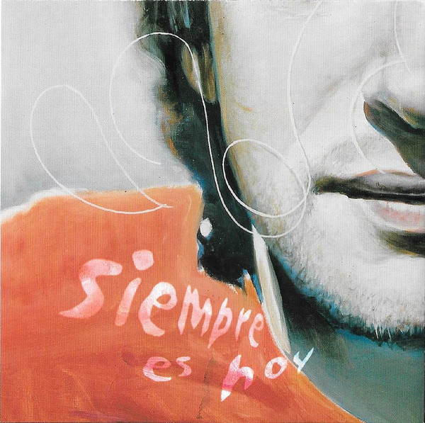

Gracias por venir
Un nuevo camino
Tras la ruptura de Soda Stereo, Cerati comenzó su andar como solista. Su primer trabajo discográfico fue muy sorpresivo para todos, ya que en 1993 (aún con Soda Stereo en el plano musical) lanzó "Amor Amarillo", el primer hijo de su nueva etapa. En el mismo destacan sencillos como "Te llevo para que me lleves", "Pulsar" y "Lisa." Luego en 1999 y antes del cambio de siglo, "Bocanada" hizo su aparición. Considerado de los mejores discos hasta la fecha, contiene temas que quedaron en la memoria de la musical iberoamericana: "Puente", "Raíz", "Paseo Inmoral", "Tabú", "Río Babel", entre otros, son las canciones que componen en este segundo CD del ex Soda.
Videoclip del sencillo "Crimen"
Siguiendo la línea de Bocanada, en 2002 vio la luz "Siempre es hoy". Entre lo más destacado se encuentra "Cosas Imposibles", "Karaoke", "Artefacto" y "No te creo". Cuatro años más tarde "Ahí Vamos" sería uno de los legados musicales de Cerati. A lo largo de sus 13 tracks, podemos encontrar temas como "Crimen", "La Excepción", "Me quedo aquí", "Adiós" y "Lago en el Cielo". Su último disco sería "Fuerza Natural" en 2009. Allí sus sencillos más destacados son "Rapto", "Magia" y "Dejá Vú".
Discografía

AMOR AMARILLO (1993)
1. Amor Amarillo
2. Lisa
3. Te llevo para que me lleves 
4. Pulsar
5. Cabeza de Medusa
6. Avenida Alcorta
8. Rombos
9. Ahora es nunca
10. A merced
11. Torteval

BOCANADA (1999)

1. Tabú
2. Engaña
3. Bocanada
4. Puente
5. Río Babel
6. Beatiful
7. Perdonar es Divino
8. Verbo Carne
10. Y si el humo está en foco
11. Paseo Inmoral
12. Aqui y ahora (Los primeros tres minutos)
13. Aqui y ahora (Y después)
14. Alma
15. Balsa
SIEMPRE ES HOY (2002)
 1. Cosas Imposibles
2. No te creo
3. Artefacto
4. Nací para esto
6. Tu cicatriz en Mí
7. Señales Luminosas
8. Karaoke
9. Sulky
10. Casa
11. Camuflaje
12. Altar
13. Torre de Marfil
14. Fantasma
15. Vivo
16. Sudestada
17. Especie
AHÍ VAMOS (2006)
1. Al Fin Sucede
2. La Excepción
3. Uno entre 1000
4. Caravana
5. Adiós
6. Me quedo aquí
8. Dios nos libre
9. Otra piel
10. Médium
11. Bomba de tiempo
12. Crimen
13. Jugo de Luna
FUERZA NATURAL (2009)

1. Fuerza Natural
2. Déjá Vu
3. Magia
4. Amor sin rodeos
5. Tracción a Sangre
6. Desastre
7. Rapto
9. Naturaleza muerta
10. Dominó
11. Sal
12. Convoy
13. He visto a Lucy
14. # (Numeral)

{kind=link}
{kind=link}
{kind=link}
{kind=link}